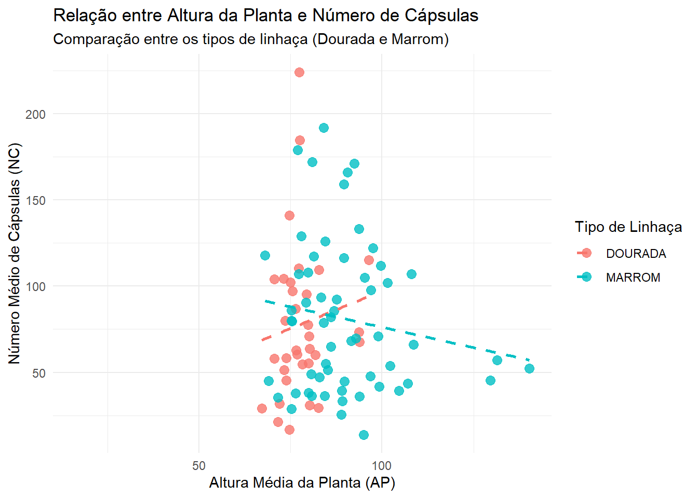
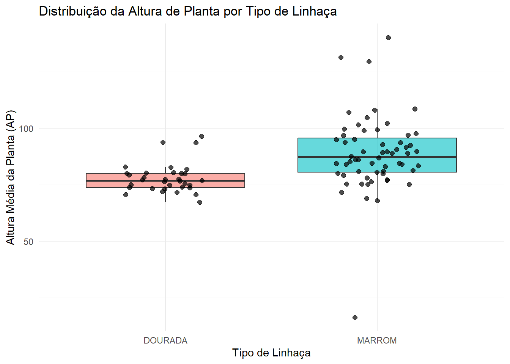
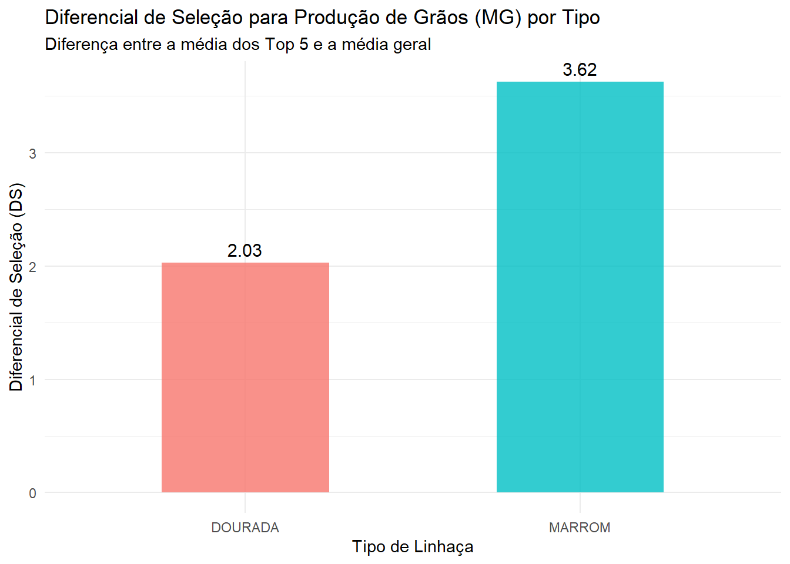

# 1.1. Escreva seu código aqui para carregar os pacotes e importar os dados.# Pacotes e dadoslibrary(rio)library(tidyverse)# 1.2. Importar os quatro conjuntos de dadoslaboratorio <-import("laboratorio.xlsx")capsulas <-import("capsulas.xlsx")graos <-import("graos.csv")mmg <-import("mmg.xlsx")# 1.3. Verificar a estrutura dos dadosglimpse(laboratorio)
# Crie os blocos de código necessários para processar os dados de grãos, # cápsulas e depois uni-los aos dados de laboratório.# 2.1. Resumir as características dos grãos por plantagraos_resumo <- graos %>%mutate(INDIVIDUO =parse_number(img)) %>%group_by(INDIVIDUO) %>%summarise(NG =n(), # Número total de grãosCG =mean(length, na.rm =TRUE), # Comprimento médio dos grãosLG =mean(width, na.rm =TRUE) # Largura média dos grãos )# 2.2. Extrair a característica número total de cápsula das cápsulas por plantacapsulas_resumo <- capsulas %>%# Extrair o número da planta do início da string da coluna 'img'mutate(INDIVIDUO =parse_number(img)) %>%group_by(INDIVIDUO) %>%summarise(NC =n() # Número total de cápsulas )# 2.3. Criar o identificador na tabela de laboratóriolaboratorio_id <- laboratorio %>%mutate(INDIVIDUO =parse_number(as.character(IMG)))# 2.4. Unificar os dados por plantadados_planta <- laboratorio_id %>%left_join(capsulas_resumo, by ="INDIVIDUO") %>%left_join(graos_resumo, by ="INDIVIDUO")# 2.5. Diagnóstico dos dados ausentes (para inspecionar os indivíduos 8, 9, 10, etc.)dados_ausentes <- dados_planta %>%filter(is.na(NC) |is.na(NG)) %>%select(INDIVIDUO, GEN, TIPO, NC, NG)# Visualizar a tabela de ausentesprint(dados_ausentes)
INDIVIDUO GEN TIPO NC NG
1 1 G1 DOURADA NA 732
2 4 G1 DOURADA NA 463
3 8 G3 DOURADA NA NA
4 9 G3 DOURADA NA NA
5 10 G3 DOURADA NA NA
6 11 G5 DOURADA NA 772
7 70 G43 DOURADA 36 NA
8 79 G56 DOURADA NA NA
9 80 G56 DOURADA NA NA
10 104 G75 DOURADA 52 NA
11 105 G75 DOURADA 90 NA
12 130 G92 DOURADA NA NA
13 131 G93 DOURADA NA 355
14 133 G93 DOURADA NA NA
15 141 G133 DOURADA NA NA
16 142 G133 DOURADA NA NA
17 143 G133 DOURADA NA NA
18 144 G133 DOURADA NA NA
19 145 G133 DOURADA NA NA
20 146 G144 DOURADA NA NA
21 147 G144 DOURADA NA NA
22 148 G144 DOURADA NA NA
23 149 G144 DOURADA NA NA
24 150 G144 DOURADA NA NA
25 159 G148 DOURADA NA NA
26 160 G148 DOURADA NA NA
27 161 G149 DOURADA NA NA
28 162 G149 DOURADA NA NA
29 163 G149 DOURADA NA NA
30 164 G149 DOURADA NA NA
31 165 G149 DOURADA NA NA
32 166 G150 DOURADA NA NA
33 167 G150 DOURADA NA NA
34 168 G150 DOURADA NA NA
35 169 G150 DOURADA NA NA
36 170 G150 DOURADA NA NA
37 174 G195 DOURADA NA NA
38 175 G195 DOURADA NA NA
39 176 G197 DOURADA NA NA
40 177 G197 DOURADA NA NA
41 178 G197 DOURADA NA NA
42 179 G197 DOURADA NA NA
43 180 G197 DOURADA NA NA
44 200 G4 MARROM NA 2176
45 215 G11 MARROM NA NA
46 222 G12 MARROM NA NA
47 223 G12 MARROM NA NA
48 224 G12 MARROM NA NA
49 225 G12 MARROM NA NA
50 240 G16 MARROM NA NA
51 260 G29 MARROM 79 NA
52 283 G54 MARROM NA 628
53 289 G63 MARROM NA NA
54 290 G63 MARROM NA NA
55 294 G64 MARROM NA NA
56 295 G64 MARROM NA NA
57 321 G78 MARROM NA NA
58 322 G78 MARROM NA NA
59 323 G78 MARROM NA NA
60 324 G78 MARROM NA NA
61 325 G78 MARROM NA NA
62 337 G84 MARROM NA NA
63 342 G86 MARROM NA NA
64 343 G86 MARROM NA NA
65 344 G86 MARROM NA NA
66 345 G86 MARROM NA NA
67 346 G89 MARROM NA NA
68 347 G89 MARROM NA NA
69 348 G89 MARROM NA NA
70 349 G89 MARROM NA NA
71 350 G89 MARROM NA NA
72 351 G94 MARROM NA NA
73 352 G94 MARROM NA NA
74 353 G94 MARROM NA NA
75 354 G94 MARROM NA NA
76 355 G94 MARROM NA NA
77 356 G95 MARROM NA NA
78 357 G95 MARROM NA NA
79 358 G95 MARROM NA NA
80 359 G95 MARROM NA NA
81 360 G95 MARROM NA NA
82 386 G137 MARROM NA 670
83 387 G137 MARROM NA 592
84 388 G137 MARROM NA 82
85 389 G137 MARROM NA 440
86 390 G137 MARROM NA 13
87 397 G141 MARROM NA NA
88 398 G141 MARROM NA NA
89 399 G141 MARROM NA NA
90 400 G141 MARROM NA NA
91 401 G143 MARROM NA NA
92 402 G143 MARROM NA NA
93 403 G143 MARROM NA NA
94 404 G143 MARROM NA NA
95 405 G143 MARROM NA NA
96 406 G157 MARROM NA NA
97 407 G157 MARROM NA NA
98 408 G157 MARROM NA NA
99 409 G157 MARROM NA NA
100 410 G157 MARROM NA NA
101 412 G158 MARROM NA NA
102 413 G158 MARROM NA NA
103 414 G158 MARROM NA NA
104 415 G158 MARROM NA NA
105 416 G159 MARROM NA NA
106 417 G159 MARROM NA NA
107 418 G159 MARROM NA NA
108 419 G159 MARROM NA NA
109 420 G159 MARROM NA NA
110 436 G174 MARROM NA NA
111 437 G174 MARROM NA NA
112 438 G174 MARROM NA NA
113 439 G174 MARROM NA NA
114 440 G174 MARROM NA NA
115 441 G175 MARROM NA NA
116 442 G175 MARROM NA NA
117 443 G175 MARROM NA NA
118 444 G175 MARROM NA NA
119 445 G175 MARROM NA NA
120 446 G177 MARROM NA NA
121 447 G177 MARROM NA NA
122 448 G177 MARROM NA NA
123 449 G177 MARROM NA NA
124 450 G177 MARROM NA NA
125 451 G178 MARROM NA 158
126 453 G178 MARROM NA NA
127 454 G178 MARROM NA NA
128 455 G178 MARROM NA NA
129 456 G185 MARROM NA NA
130 457 G185 MARROM NA NA
131 458 G185 MARROM NA NA
132 459 G185 MARROM NA NA
133 460 G185 MARROM NA NA
134 465 G196 MARROM NA NA
135 466 G202 MARROM NA NA
136 467 G202 MARROM NA NA
137 468 G202 MARROM NA NA
138 469 G202 MARROM NA NA
139 470 G202 MARROM NA NA
140 476 G206 MARROM NA NA
141 477 G206 MARROM NA NA
142 478 G206 MARROM NA NA
143 479 G206 MARROM NA NA
144 480 G206 MARROM NA NA
145 481 G211 MARROM NA NA
146 482 G211 MARROM NA NA
147 483 G211 MARROM NA NA
148 484 G211 MARROM NA NA
149 485 G211 MARROM NA NA
150 540 G226 MARROM NA 276
151 547 G228 MARROM NA NA
152 548 G228 MARROM NA NA
153 549 G228 MARROM NA NA
154 550 G228 MARROM NA NA
155 551 G229 MARROM NA NA
156 552 G229 MARROM NA NA
157 553 G229 MARROM NA NA
158 554 G229 MARROM NA NA
159 555 G229 MARROM NA NA
160 556 G230 MARROM NA NA
161 557 G230 MARROM NA NA
162 558 G230 MARROM NA NA
163 559 G230 MARROM NA NA
164 560 G230 MARROM NA NA
165 566 G232 MARROM NA NA
166 567 G232 MARROM NA NA
167 568 G232 MARROM NA NA
168 569 G232 MARROM NA NA
169 570 G232 MARROM NA NA
170 575 G233 MARROM NA NA
171 576 G234 MARROM NA NA
172 577 G234 MARROM NA NA
173 578 G234 MARROM NA NA
174 579 G234 MARROM NA NA
175 580 G234 MARROM NA NA
176 581 G235 MARROM NA NA
177 582 G235 MARROM NA NA
178 583 G235 MARROM NA NA
179 584 G235 MARROM NA NA
180 585 G235 MARROM NA NA
181 586 G192 MARROM NA NA
182 587 G192 MARROM NA NA
183 588 G192 MARROM NA NA
184 589 G192 MARROM NA NA
185 590 G192 MARROM NA NA
186 591 GPOP1 MARROM NA NA
187 592 GPOP1 MARROM NA NA
188 593 GPOP1 MARROM NA NA
189 594 GPOP1 MARROM NA NA
190 595 GPOP1 MARROM NA NA
191 596 GPOP2 MARROM NA NA
192 597 GPOP2 MARROM NA NA
193 598 GPOP2 MARROM NA NA
194 599 GPOP2 MARROM NA NA
195 600 GPOP2 MARROM NA NA
3. Análise e Consolidação por Genótipo
# 3.1. Agregação: Calcular a média de todas as variáveis numéricas para cada genótipo (GEN)dados_genotipo <- dados_planta %>%group_by(GEN, TIPO) %>%# Mantemos também o TIPO (DOURADA ou MARROM) para referênciasummarise(# Variáveis fenotípicas/laboratório (usando na.rm = TRUE por segurança)AP_media =mean(AP, na.rm =TRUE),AC_media =mean(AC, na.rm =TRUE),NR_media =mean(NR, na.rm =TRUE),MC_media =mean(MC, na.rm =TRUE),MG_media =mean(MG, na.rm =TRUE),# Variáveis extraídas das imagens (cápsulas e grãos)NC_medio =mean(NC, na.rm =TRUE),NG_medio =mean(NG, na.rm =TRUE),CG_medio =mean(CG, na.rm =TRUE),LG_medio =mean(LG, na.rm =TRUE),.groups ="drop"# Remove o agrupamento após o resumo )# 3.2. Junção Final: Adicionar a massa de mil grãos (mmg) ao data frame de genótiposdados_finais <- dados_genotipo %>%left_join(mmg, by ="GEN")# Resultado Final: Visualizar as primeiras linhas da tabela consolidada por genótipohead(dados_finais)
# 3.3. Ordenar os genótipos de forma numérica (G1, G2, G3... em vez de G1, G10...)dados_finais <- dados_finais %>%mutate(GEN_NUM =parse_number(GEN)) %>%# Extrai o número do genótipo temporariamentearrange(TIPO.x, GEN_NUM) %>%# Ordena por TIPO e pelo número do genótiposelect(-GEN_NUM) # Remove a coluna temporária# Visualizar as primeiras linhas organizadashead(dados_finais, 15)
# 3.4. Limpar e selecionar apenas as colunas essenciais para o resultado finaldados_finais_limpo <- dados_finais %>%# Manter apenas uma coluna de TIPO (renomeando para 'TIPO')mutate(TIPO = TIPO.x) %>%# Selecionar e ordenar as colunas de forma limpaselect(GEN, TIPO, AP_media, AC_media, NR_media, MC_media, MG_media, NC_medio, NG_medio, CG_medio, LG_medio, mmg)# Visualizar o resultado final limpohead(dados_finais_limpo)
# 4.1. Gráfico 1: Relação entre altura da planta (AP_media) e número de cápsulas (NC_medio)ggplot(dados_finais_limpo, aes(x = AP_media, y = NC_medio, color = TIPO)) +geom_point(size =3, alpha =0.8) +geom_smooth(method ="lm", se =FALSE, linetype ="dashed") +labs(title ="Relação entre Altura da Planta e Número de Cápsulas",subtitle ="Comparação entre os tipos de linhaça (Dourada e Marrom)",x ="Altura Média da Planta (AP)",y ="Número Médio de Cápsulas (NC)",color ="Tipo de Linhaça" ) +theme_minimal()
`geom_smooth()` using formula = 'y ~ x'
Warning: Removed 28 rows containing non-finite outside the scale range
(`stat_smooth()`).
Warning: Removed 28 rows containing missing values or values outside the scale range
(`geom_point()`).

# 4.2. Gráfico 2: Comparação de altura entre Dourada e Marromggplot(dados_finais_limpo, aes(x = TIPO, y = AP_media, fill = TIPO)) +geom_boxplot(alpha =0.6, outlier.shape =NA) +geom_jitter(width =0.2, size =2, alpha =0.7) +labs(title ="Distribuição da Altura de Planta por Tipo de Linhaça",x ="Tipo de Linhaça",y ="Altura Média da Planta (AP)",fill ="Tipo" ) +theme_minimal() +theme(legend.position ="none")
Warning: Removed 27 rows containing non-finite outside the scale range
(`stat_boxplot()`).
Warning: Removed 27 rows containing missing values or values outside the scale range
(`geom_point()`).

library(dplyr)# 4.3. Encontrar os Top 5 genótipos por tipo de linhaça com base na massa de grãos (MG_media)top5_genotipos <- dados_finais_limpo %>%group_by(TIPO) %>%slice_max(order_by = MG_media, n =5) %>%ungroup()# Visualizar a tabela com os top 5print(top5_genotipos %>%select(TIPO, GEN, MG_media))
# 4.4. Calcular a média geral e a média dos top 5 para cada tipodiferencial_selecao <- dados_finais_limpo %>%group_by(TIPO) %>%summarise(Media_Geral =mean(MG_media, na.rm =TRUE),Media_Top5 =mean(MG_media[GEN %in% top5_genotipos$GEN], na.rm =TRUE),Diferencial_Selecao = Media_Top5 - Media_Geral )# Exibir os valores calculadosprint(diferencial_selecao)
# 4.5. Gráfico 3: Representação do diferencial de seleção em gráfico de barrasggplot(diferencial_selecao, aes(x = TIPO, y = Diferencial_Selecao, fill = TIPO)) +geom_col(width =0.5, alpha =0.8) +geom_text(aes(label =round(Diferencial_Selecao, 2)), vjust =-0.5, size =4) +labs(title ="Diferencial de Seleção para Produção de Grãos (MG) por Tipo",subtitle ="Diferença entre a média dos Top 5 e a média geral",x ="Tipo de Linhaça",y ="Diferencial de Seleção (DS)",fill ="Tipo" ) +theme_minimal() +theme(legend.position ="none")

Conclusão
A análise integrada dos dados fenotípicos, de imagem e de massa permitiu uma avaliação abrangente dos genótipos de linhaça. A exploração visual indicou uma relação positiva entre a altura das plantas e o número de cápsulas, além de evidenciar diferenças fenotípicas importantes entre os tipos Dourada e Marrom, especialmente em relação à altura e à produtividade, apresentando plantas do tipo linhaça Marrom com maior altura média. Por fim, a identificação dos genótipos superiores (Top 5), sendo os genótipos de linhaça Marrom G4 e G2, com MG media 7.04 e 6.32, respectivamente, e de linhaça Dourada G5 e G56, com MG media 5.28 e 5.09, respectivamente, os mais notáveis; e o cálculo do diferencial de seleção demonstraram o potencial de ganho genético para a produção de grãos, fornecendo subsídios consistentes para a recomendação e seleção de variedades mais produtivas no programa de melhoramento.